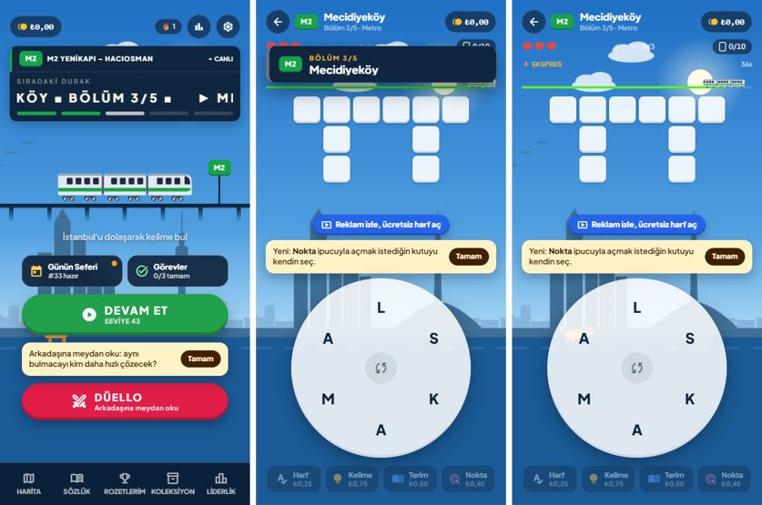

<title>Turnike Çalışma Planı</title>
<meta name="claude:viewport-fit-sides" content="cover">
<link rel="stylesheet" href="https://fonts.googleapis.com/css2?family=Archivo:wght@600;800&family=Atkinson+Hyperlegible:wght@400;700&family=JetBrains+Mono:wght@500&display=swap">
<style>
/* Düzen: tek sütun plan; ölçüm şeridi, sonra fazlar (her iş: ne, neden, araç, bitti sayılır) */
:root {
  --bg: #f4f6f9; --surface: #ffffff; --fg: #10263f; --muted: #52637a; --line: #d7dee8; --chip: #e8edf4;
  --a: #b91c1c; --b: #a14a06; --c: #1d4ed8; --d: #15803d;
  --display: "Archivo", "Segoe UI", sans-serif; --body: "Atkinson Hyperlegible", "Segoe UI", sans-serif; --mono: "JetBrains Mono", Consolas, monospace;
}
@media (prefers-color-scheme: dark) { :root:not([data-theme="light"]) { --bg: #0b1726; --surface: #12233a; --fg: #e6edf6; --muted: #9aabc2; --line: #24384f; --chip: #1b304b; --a: #f87171; --b: #fbbf24; --c: #60a5fa; --d: #4ade80; color-scheme: dark } }
:root[data-theme="dark"] { --bg: #0b1726; --surface: #12233a; --fg: #e6edf6; --muted: #9aabc2; --line: #24384f; --chip: #1b304b; --a: #f87171; --b: #fbbf24; --c: #60a5fa; --d: #4ade80; color-scheme: dark }
body { background: var(--bg); color: var(--fg); font: 16px/1.6 var(--body); }
.wrap { max-width: 880px; margin: 0 auto; padding-block: 32px 64px; padding-left: max(16px, env(safe-area-inset-left, 0px)); padding-right: max(16px, env(safe-area-inset-right, 0px)); display: flex; flex-direction: column; gap: 28px; }
h1, h2, h3 { font-family: var(--display); text-wrap: balance; margin: 0; line-height: 1.2; }
h1 { font-size: clamp(28px, 6vw, 40px); font-weight: 800; } h2 { font-size: 22px; font-weight: 800; } h3 { font-size: 16px; font-weight: 600; }
p { margin: 0; max-width: 70ch; }
.eyebrow { font: 600 12px/1 var(--display); letter-spacing: .14em; text-transform: uppercase; color: var(--muted); }
.lede, .note { color: var(--muted); } .note { font-size: 14px; }
.stats { display: grid; grid-template-columns: repeat(auto-fit, minmax(150px, 1fr)); gap: 12px; }
.stat { background: var(--surface); border: 1px solid var(--line); border-radius: 10px; padding: 14px 16px; display: flex; flex-direction: column; gap: 2px; }
.stat b { font: 800 24px/1.1 var(--display); font-variant-numeric: tabular-nums; } .stat span { color: var(--muted); font-size: 14px; }
section { display: flex; flex-direction: column; gap: 12px; }
.phase-head { display: flex; flex-wrap: wrap; align-items: baseline; gap: 6px 12px; }
.tag { font: 600 11px/1 var(--display); letter-spacing: .08em; text-transform: uppercase; color: var(--k); border: 1px solid var(--k); border-radius: 999px; padding: 6px 12px; }
.pa { --k: var(--a) } .pb { --k: var(--b) } .pc { --k: var(--c) } .pd { --k: var(--d) }
.task { background: var(--surface); border: 1px solid var(--line); border-radius: 8px; padding: 14px 16px; display: flex; flex-direction: column; gap: 6px; min-width: 0; }
.kv { display: grid; grid-template-columns: 7em 1fr; gap: 3px 12px; font-size: 15px; }
.kv dt { color: var(--muted); } .kv dd { margin: 0; min-width: 0; }
code { font: 500 13px var(--mono); background: var(--chip); padding: 3px 8px; border-radius: 4px; overflow-wrap: anywhere; }
.table-wrap { overflow-x: auto; border: 1px solid var(--line); border-radius: 8px; background: var(--surface); }
table { border-collapse: collapse; width: 100%; min-width: 600px; font-size: 15px; }
th, td { text-align: left; padding: 10px 12px; border-bottom: 1px solid var(--line); vertical-align: top; }
th { font: 600 12px var(--display); letter-spacing: .08em; text-transform: uppercase; color: var(--muted); }
tr:last-child td { border-bottom: 0; }
</style>

<main class="wrap">
  <header style="display:flex;flex-direction:column;gap:10px">
    <span class="eyebrow">Turnike: Sözcük Seferi · 2 Kasım 2026</span>
    <h1>Kararlılık, oynanış ve büyüme çalışma planı</h1>
    <p class="lede">Kod haritası graphify ile çıkarıldı (646 düğüm, 1.686 bağ, 38 küme). Önceki denetimdeki dokuz madde ve ızgara hatası düzeltildi. Bu plan sıradaki işleri dört faza ayırıyor; her iş için hangi yeni skill, agent ya da MCP'nin kullanılacağı yazıyor.</p>
  </header>

  <div class="stats" aria-label="Ölçümler">
    <div class="stat"><b>1.188</b><span>satır: GameContainer, 28 state</span></div>
    <div class="stat"><b>748 KB</b><span>tek JS paketi (gzip 227 KB)</span></div>
    <div class="stat"><b>0</b><span>birim testi (yalnızca seviye taraması)</span></div>
    <div class="stat"><b>79</b><span>çevrilmemiş Türkçe metin</span></div>
  </div>

  <section>
    <h2>Durum · 2 Kasım 2026</h2>
    <div class="table-wrap"><table>
      <thead><tr><th>İş</th><th>Durum</th><th>Not</th></tr></thead>
      <tbody>
        <tr><td>1.1 Kuralları ayırmak</td><td>Kısmen</td><td><code>src/game/rules.js</code> ve <code>src/game/hints.js</code>; GameContainer 1.149 satır (duraklatma ve yeni özellikler eklendi). Süre ve reklam akışı hâlâ içeride.</td></tr>
        <tr><td>1.2 Birim testleri</td><td>Bitti</td><td><code>npm test</code>, 22 test, ek paket yok</td></tr>
        <tr><td>1.3 Uçtan uca testler</td><td>Bitti</td><td><code>npm run test:e2e</code>, 8 akış</td></tr>
        <tr><td>1.4 Ölü kod</td><td>Bitti</td><td>Kullanılmayan değişken 104 → 0; lint 19 uyarı (React hook kalıpları)</td></tr>
        <tr><td>1.5 Supabase denetimi</td><td>Bekliyor</td><td>MCP proje erişimi gerekiyor</td></tr>
        <tr><td>CI</td><td>Bitti</td><td>GitHub Actions: test, seviye taraması, build</td></tr>
        <tr><td>2.1 Paket</td><td>Bitti</td><td>İlk yükleme 748 KB → 276 KB</td></tr>
        <tr><td>2.2 Erişilebilirlik</td><td>Bitti</td><td>Çark ekran okuyucuyla kaydırmadan kullanılabiliyor (gizli harf düğmeleri); cihazda TalkBack ile denenmedi</td></tr>
        <tr><td>2.3 İngilizce</td><td>Bitti</td><td>Arayüz ve veri metinleri çevrildi (<code>src/utils/en.js</code>); özel adlar Türkçe kalıyor</td></tr>
        <tr><td>3.1 Kök havuzu</td><td>Kısmen</td><td>+75 gündelik kök; farklı kök 174 → 191, en kısa tekrar 9 → 26 seviye. İleri seviyeler 7–8 harfli kök istiyor; 500 hedefi için bu uzunlukta kelime gerekiyor. Düello/günlük havuzu donduruldu.</td></tr>
        <tr><td>3B.1 Yanlış kelime cezası</td><td>Karar: kalıyor</td><td></td></tr>
        <tr><td>3B.2 Reklam düğmesi</td><td>Bitti</td><td>30 sn takılınca</td></tr>
        <tr><td>3B.3 Duraklatma</td><td>Bitti</td><td>Arka plana geçince de duruyor</td></tr>
        <tr><td>3B.4 Açılış katmanları</td><td>Bitti</td><td>Baloncuklar tabeladan sonra, tek tek</td></tr>
        <tr><td>3B.5 Göstergeler</td><td>Bitti</td><td>Opak durum satırı, sabit tabela</td></tr>
        <tr><td>3B.6 Bölüm sonu</td><td>Bitti</td><td>Döküm katlanır, devam kaydırmadan görünür</td></tr>
        <tr><td>3B.7 Tanıtımlar</td><td>Bitti</td><td>Düello 10. seviyeden, günlük çark 3. seviyeden</td></tr>
        <tr><td>Kelime anlamı, hat bitirme kartı</td><td>Bitti</td><td></td></tr>
        <tr><td>Faz 4 Mağaza</td><td>Bekliyor</td><td>Play Console ve AdMob hesabı gerekiyor</td></tr>
      </tbody>
    </table></div>
  </section>

  <section>
    <h2>Graphify ne gösterdi</h2>
    <p>En çok bağlantılı düğümler <code>useGameStore</code> (65 bağ) ve <code>GameContainer</code> (49 bağ). Oyunun bütün kuralları (kelime kontrolü, can, süre, ipucu, ödül, reklam, etkinlik, kayıp eşya) tek bir 1.188 satırlık bileşende duruyor. Bir değişiklik her şeyi etkiliyor ve test edilemiyor. Dört ekran (<code>BadgesScreen</code>, <code>BonusLockers</code>, <code>LostItemsScreen</code>, <code>UsernameModal</code>) store'un tamamına abone; store'daki her değişiklikte yeniden çiziliyorlar.</p>
  </section>

  <section>
    <div class="phase-head"><h2>Faz 1 · Kararlılık</h2><span class="tag pa">1–2 hafta · önce</span></div>
    <p class="note">Amaç: oyunun kuralları test edilebilir olsun, bir düzeltme başka bir yeri bozmasın.</p>
    <article class="task"><h3>1.1 Oyun kurallarını GameContainer'dan ayırmak</h3>
      <dl class="kv"><dt>Ne</dt><dd>Kelime gönderme, can, süre, ipucu ve bölüm sonu ödülü saf fonksiyonlara (<code>src/game/</code>) taşınır; bileşen yalnızca çizer.</dd><dt>Araç</dt><dd><code>mattpocock-skills:codebase-design</code> (sınırları seçmek), <code>caveman:safe-refactor</code> (davranışı koruyarak taşımak)</dd><dt>Bitti</dt><dd>GameContainer 600 satırın altında; oynanış değişmemiş (aynı bölüm aynı kazancı veriyor).</dd></dl></article>
    <article class="task"><h3>1.2 Birim testleri</h3>
      <dl class="kv"><dt>Ne</dt><dd>Vitest ile puan, ekonomi, ızgara yerleştirme, günlük seri, lig ve düello doğrulaması. <code>check:levels</code> CI'da çalışır.</dd><dt>Araç</dt><dd><code>mattpocock-skills:tdd</code>, <code>context7</code> (Vitest dokümanı)</dd><dt>Bitti</dt><dd>Her push'ta testler ve seviye taraması geçmeden Vercel'e çıkmıyor.</dd></dl></article>
    <article class="task"><h3>1.3 Uçtan uca testler</h3>
      <dl class="kv"><dt>Ne</dt><dd>Bu oturumda elle yazdığım puppeteer betikleri (çark, günlük çark, dolaplar, bölüm sonu) Playwright testlerine çevrilir.</dd><dt>Araç</dt><dd><code>Test Automation Engineer</code> agent, <code>playwright</code> MCP</dd><dt>Bitti</dt><dd>Beş ana akış (ilk açılış, bölüm, durak sonu, günlük, düello) otomatik koşuyor.</dd></dl></article>
    <article class="task"><h3>1.4 Sessiz hatalar ve ölü kod</h3>
      <dl class="kv"><dt>Ne</dt><dd>104 kullanılmayan değişken ve 9 "effect içinde setState" uyarısı temizlenir; 10 doğrudan <code>localStorage</code> çağrısı tek güvenli yardımcıya bağlanır.</dd><dt>Araç</dt><dd><code>ecc:silent-failure-hunter</code>, <code>caveman:cavecrew-reviewer</code></dd><dt>Bitti</dt><dd>Lint hatasız.</dd></dl></article>
    <article class="task"><h3>1.5 Supabase güvenlik denetimi</h3>
      <dl class="kv"><dt>Ne</dt><dd>RLS politikaları ve RPC'lerin kötüye kullanım testi (sahte skor, lig puanı şişirme).</dd><dt>Araç</dt><dd><code>supabase</code> MCP; şu an bu oyunun projesini görmüyor. Proje erişimini sen bağlamalısın.</dd><dt>Bitti</dt><dd>Güvenlik danışmanında kritik uyarı yok.</dd></dl></article>
  </section>

  <section>
    <div class="phase-head"><h2>Faz 2 · Performans ve erişilebilirlik</h2><span class="tag pb">1 hafta</span></div>
    <article class="task"><h3>2.1 Paketi bölmek</h3>
      <dl class="kv"><dt>Ne</dt><dd>748 KB'lik tek paket: sözlük ve kelime havuzları ayrı parçaya, harita, düello, sözlük ve koleksiyon ekranları <code>React.lazy</code> ile isteğe bağlı yüklenir. Seçicisiz dört store aboneliği seçiciye çevrilir.</dd><dt>Araç</dt><dd><code>Performance Benchmarker</code> agent, <code>ecc:react-performance</code></dd><dt>Bitti</dt><dd>İlk yükleme 300 KB altı; düşük seviye Android'de açılış süresi ölçülmüş.</dd></dl></article>
    <article class="task"><h3>2.2 Erişilebilirlik denetimi</h3>
      <dl class="kv"><dt>Ne</dt><dd>TalkBack ile çark, ızgara ve menüler; renk kontrastı (yüksek kontrast teması), dokunma alanları.</dd><dt>Araç</dt><dd><code>Accessibility Auditor</code> agent, <code>artemis</code> (cihazda; API anahtarı gerekiyor)</dd><dt>Bitti</dt><dd>Çark ekran okuyucuyla kullanılabilir (harf düğmeleri + "gönder").</dd></dl></article>
    <article class="task"><h3>2.3 İngilizce sürümü tamamlamak</h3>
      <dl class="kv"><dt>Ne</dt><dd>79 sabit Türkçe metin i18n'e taşınır. Ayarlarda İngilizce seçilebiliyor ama yarısı Türkçe kalıyor.</dd><dt>Araç</dt><dd><code>ecc:i18n-sync</code></dd><dt>Bitti</dt><dd>İngilizce modda Türkçe metin kalmıyor ya da seçenek kaldırılıyor.</dd></dl></article>
  </section>

  <section>
    <div class="phase-head"><h2>Faz 3 · Oynanış ve elde tutma</h2><span class="tag pc">2–3 hafta</span></div>
    <p class="note">Words of Wonders tarzı oyunlarda oyuncuyu tutan şeyler: çeşitlilik, ilerleme hissi, günlük alışkanlık.</p>
    <article class="task"><h3>3.1 Kök havuzunu büyütmek</h3>
      <dl class="kv"><dt>Ne</dt><dd>174 farklı kök 10.000 seviyeye yetmiyor (her kök ~57 kez). Hedef 500+ kök; her hat için en az 25.</dd><dt>Araç</dt><dd><code>check:levels</code> (her ekleme sonrası), <code>exa</code> (İstanbul ulaşım terimleri kaynağı)</dd><dt>Bitti</dt><dd>Ortalama tekrar aralığı 99'dan 300+ seviyeye çıkmış.</dd></dl></article>
    <article class="task"><h3>3.2 Kullanıcı şikâyetlerinden özellik listesi</h3>
      <dl class="kv"><dt>Ne</dt><dd>Words of Wonders ve benzerlerinin mağaza yorumlarından en çok şikâyet edilen ve istenen özellikler çıkarılır.</dd><dt>Araç</dt><dd><code>replica-skill:replica-entrepreneur</code> (gerçek yorumlar, alıntılı)</dd><dt>Bitti</dt><dd>Önceliklendirilmiş 10 maddelik fırsat listesi.</dd></dl></article>
    <article class="task"><h3>3.3 Zorluk eğrisini veriyle ayarlamak</h3>
      <dl class="kv"><dt>Ne</dt><dd>Analitikte toplanan seviye süresi, ipucu kullanımı ve bırakma noktalarından hangi seviyelerin takıldığı görülür; DDA ayarlanır.</dd><dt>Araç</dt><dd><code>supabase</code> MCP (bağlanınca), <code>dataviz</code></dd><dt>Bitti</dt><dd>İlk 50 seviyede bırakma oranı ölçülmüş ve düşürülmüş.</dd></dl></article>
    <article class="task"><h3>3.4 Küçük keyif anları</h3>
      <dl class="kv"><dt>Ne</dt><dd>Durak sonu kutlaması, hat bitirme sahnesi, uzun kelimede özel efekt.</dd><dt>Araç</dt><dd><code>Whimsy Injector</code> agent, <code>ecc:motion-patterns</code></dd><dt>Bitti</dt><dd>Her hat bitişinde kendine özel bir an.</dd></dl></article>
  </section>

  <section>
    <div class="phase-head"><h2>Faz 3B · Arayüz, deneyim ve oynanış</h2><span class="tag pc">2 hafta · Faz 3 ile birlikte</span></div>
    <p>Aşağıdaki gözlemler 412×833 telefon görünümünde ana ekran, bölüm açılışı (1,2 sn) ve oyun sırasında (4,7 sn) alınan görüntülere ve telefonda gezilen 13 ekrana dayanıyor.</p>
    <figure style="margin:0;display:flex;flex-direction:column;gap:6px">
      <div class="table-wrap" style="background:var(--surface);padding:12px"></div>
      <figcaption class="note">Soldan sağa: ana ekran · bölüm açılışı · oyun sırasında (seviye 43, bakiye ₺0).</figcaption>
    </figure>

    <h3 style="margin-top:8px">Oynanış: türün rahat döngüsüyle çelişen yerler</h3>
    <article class="task"><h3>3B.1 Yanlış kelime cezası</h3>
      <dl class="kv"><dt>Gözlem</dt><dd>Üç yanlış kelimede can bitiyor ve "Treni kaçırdın" ekranı geliyor. Words of Wonders ve benzerleri yanlış denemeyi cezalandırmaz.</dd><dt>Karar</dt><dd>Ceza kalıyor (2 Kasım 2026). Oyunun kendine özgü gerilimi bu.</dd><dt>İzlenecek</dt><dd>Analitikte ilk 20 seviyede "Treni kaçırdın" sonrası oyunu bırakma oranı. Yüksek çıkarsa karar yeniden konuşulur.</dd></dl></article>
    <article class="task"><h3>3B.2 Takılınca nazik yardım</h3>
      <dl class="kv"><dt>Gözlem</dt><dd>Oyuncu daha hiçbir şey denemeden, bölüm açılır açılmaz "Reklam izle, ücretsiz harf aç" düğmesi çıkıyor. Bu, reklamı yardım değil baskı gibi gösteriyor. Bakiye ₺0 iken alttaki dört ipucu düğmesi soluk görünüyor ama nasıl para kazanılacağı yazmıyor.</dd><dt>Öneri</dt><dd>Reklam düğmesi ancak 30 saniye kelime bulunamazsa ya da bakiye bir ipucuna yetmezse çıksın. Para yetmeyen ipucuna basınca "Reklamla aç" ya da "Bölüm bitince ₺1 kazanırsın" yazan küçük bir pencere açılsın.</dd><dt>Araç</dt><dd><code>Persona Walkthrough Specialist</code> agent (yeni oyuncu gözünden adım adım)</dd><dt>Bitti</dt><dd>Reklam düğmesinin tıklanma oranı artıyor, ilk bölümde gösterim sayısı düşüyor.</dd></dl></article>
    <article class="task"><h3>3B.3 Gerçek bir "rahat" ritim</h3>
      <dl class="kv"><dt>Gözlem</dt><dd>Oyunda duraklatma yok. Ekspres süre, can, kombo ve günlük seri aynı anda baskı kuruyor.</dd><dt>Öneri</dt><dd>Üst çubuğa duraklatma düğmesi (ayarlar, ses, ana menü). Ayarlara "Süresiz mod" seçeneği eklenebilir: ekspres bonusu kapanır, oyun sakinleşir.</dd><dt>Araç</dt><dd><code>superpowers:brainstorming</code></dd><dt>Bitti</dt><dd>Oyun her an duraklatılabiliyor; arka plana alınınca süre duruyor.</dd></dl></article>

    <h3 style="margin-top:8px">Arayüz: aynı anda çok şey konuşuyor</h3>
    <article class="task"><h3>3B.4 Bölüm açılışında üst üste binen katmanlar</h3>
      <dl class="kv"><dt>Gözlem</dt><dd>Bölüm açılışında aynı anda dört şey var: durak tabelası canları ve ekspres çubuğunu örtüyor, ızgaranın hemen altında reklam düğmesi ve "Yeni: Nokta ipucu" baloncuğu çarkın üstüne biniyor. Oyuncu ilk 3 saniyede neye bakacağını bilmiyor.</dd><dt>Öneri</dt><dd>Sıra kuralı: önce tabela (2 sn), sonra en fazla bir ipucu baloncuğu, reklam düğmesi yalnızca 3B.2'deki koşulda. İpucu baloncukları çarkın değil ızgaranın üstünde dursun.</dd><dt>Araç</dt><dd><code>impeccable</code> (<code>/impeccable critique</code>, <code>polish</code>)</dd><dt>Bitti</dt><dd>Hiçbir anda iki baloncuk birden görünmüyor; çark hiçbir zaman örtülmüyor.</dd></dl></article>
    <article class="task"><h3>3B.5 Okunmayan küçük göstergeler</h3>
      <dl class="kv"><dt>Gözlem</dt><dd>Kelime sayacı "0/3" bulutun arkasında kalıp okunmuyor. Canlar ve "EKSPRES 36s" çok küçük. Ana ekrandaki kayan durak tabelası "KÖY ■ BÖLÜM 3/5 ■ ▶ MI" diye kesik görünüyor; durak adı tam okunmuyor.</dd><dt>Öneri</dt><dd>Üst bilgi tek bir kapsül sırasına: canlar · bulunan/toplam · süre, opak zemin üstünde. Ana ekran tabelası kaymasın; durak adı ve "Bölüm 3/5" iki satır sabit yazılsın.</dd><dt>Araç</dt><dd><code>UI Designer</code> agent, <code>Accessibility Auditor</code> agent (kontrast)</dd><dt>Bitti</dt><dd>Tüm oyun içi metinler 4,5:1 kontrastta; hiçbir gösterge sahne öğesinin arkasında kalmıyor.</dd></dl></article>
    <article class="task"><h3>3B.6 Bölüm sonu ekranı çok uzun</h3>
      <dl class="kv"><dt>Gözlem</dt><dd>Bölüm sonunda yıldızlar, beş satırlık kazanç dökümü, kayıp eşya, kartpostal, öğrenilen terimler, sıradaki durak, reklam düğmesi ve üç düğme var. Devam düğmesi çoğu telefonda ekranın altında kalıyor; oyuncu her bölümde kaydırıyor.</dd><dt>Öneri</dt><dd>Varsayılan görünüm: yıldız, tek toplam kazanç, "DEVAM ET". Döküm ve terimler dokununca açılan bir satırda. Kartpostal ve eşya yalnızca çıktığı bölümde kısa bir kart.</dd><dt>Araç</dt><dd><code>UX Architect</code> agent</dd><dt>Bitti</dt><dd>Devam düğmesi kaydırmadan görünüyor; bölümden bölüme geçiş tek dokunuş.</dd></dl></article>
    <article class="task"><h3>3B.7 İlk açılışta ipucu yağmuru</h3>
      <dl class="kv"><dt>Gözlem</dt><dd>Yeni bir oyuncu ilk dakikada izin penceresi, günlük çark, ana ekranda "Arkadaşına meydan oku" baloncuğu ve oyunda "Nokta ipucu" baloncuğu görüyor. Üstelik düello, oyunu henüz tanımayan birine öneriliyor.</dd><dt>Öneri</dt><dd>Özellik tanıtımları ilerlemeye bağlansın: düello 10. seviyeden, Nokta ipucu ilk takılmada, günlük çark ikinci oturumda. Bir oturumda en fazla bir tanıtım.</dd><dt>Araç</dt><dd><code>Persona Walkthrough Specialist</code>, <code>artemis</code> (cihazda ilk açılış testi)</dd><dt>Bitti</dt><dd>İlk 5 dakikada en fazla iki açılır pencere.</dd></dl></article>
    <article class="task"><h3>3B.8 Çarkın hissi</h3>
      <dl class="kv"><dt>Gözlem</dt><dd>Seçim mantığı düzeldi, ama parmak çarkın dışına çıkınca çizgi sürüyor ve harfler küçük ekranda birbirine yakın. Seçilen kelimenin önizlemesi ızgaranın üstünde, parmaktan uzakta çıkıyor.</dd><dt>Öneri</dt><dd>Harf seçilince kısa büyüme ve titreşim (var) yanında, önizleme çarkın hemen üstünde. 7–8 harfte harf boyutu küçülmek yerine çark biraz büyüsün; boş gökyüzü alanı buna yetiyor.</dd><dt>Araç</dt><dd><code>mobile-native</code> skill'i, <code>artemis</code> (gerçek parmak testi)</dd><dt>Bitti</dt><dd>Telefonda 8 harfli bir bölüm, hiç yanlış harf seçmeden oynanabiliyor.</dd></dl></article>

    <h3 style="margin-top:8px">Eklenebilecek özellikler</h3>
    <div class="table-wrap"><table>
      <thead><tr><th>Özellik</th><th>Neden</th><th>Efor</th></tr></thead>
      <tbody>
        <tr><td>Hat bitirme sahnesi ve rozet</td><td>Bir hattı bitirmek şu an sessizce geçiyor; en güçlü ilerleme anı</td><td>Küçük</td></tr>
        <tr><td>Haftalık semt etkinliği (ör. "Kadıköy haftası")</td><td>Sabit içerikle tekrar eden ziyaret nedeni; kartpostallarla bağlanır</td><td>Orta</td></tr>
        <tr><td>Bulunan kelimeye uzun basınca anlamı</td><td>Sözlük zaten var; öğrenme hissini oyunun içine taşır</td><td>Küçük</td></tr>
        <tr><td>Bildirim: günlük seri hatırlatıcısı</td><td>Seri sistemi var ama oyuncuya hatırlatılmıyor</td><td>Orta (Capacitor Local Notifications)</td></tr>
        <tr><td>Arkadaş tablosu (düello geçmişi)</td><td>Düello bağlantıyla oynanıyor ama kimi yendiğin bir yerde görünmüyor</td><td>Orta</td></tr>
        <tr><td>Erişilebilirlik: renk körü dostu ızgara ve büyük çark modu</td><td>Hat renkleri bilgi taşıyor; yalnız renge bağlı kalmasın</td><td>Küçük</td></tr>
      </tbody>
    </table></div>
  </section>

  <section>
    <div class="phase-head"><h2>Faz 4 · Mağazaya çıkış</h2><span class="tag pd">1–2 hafta</span></div>
    <article class="task"><h3>4.1 Yayın hazırlığı</h3>
      <dl class="kv"><dt>Ne</dt><dd>Gerçek AdMob kimlikleri, gizlilik politikası, imzalı AAB, "İstanbulkart", "Metro İstanbul" gibi marka adlarının kullanım kontrolü.</dd><dt>Araç</dt><dd><code>replica-skill:replica-launch</code> (mağaza metni), <code>replica-skill:replica-brand</code> (marka taraması), <code>capacitor-best-practices</code></dd><dt>Bitti</dt><dd>Play Console iç test kanalında.</dd></dl></article>
    <article class="task"><h3>4.2 Tanıtım</h3>
      <dl class="kv"><dt>Ne</dt><dd>Kısa oynanış videoları ve İstanbul semt kartpostallarından içerik.</dd><dt>Araç</dt><dd><code>instagram-agent</code> (<code>ig-reel</code>, <code>ig-plan</code>)</dd><dt>Bitti</dt><dd>İlk iki haftanın içerik takvimi hazır.</dd></dl></article>
  </section>

  <section>
    <h2>Senden gerekenler</h2>
    <div class="table-wrap"><table>
      <thead><tr><th>Ne</th><th>Neden</th><th>Hangi faz</th></tr></thead>
      <tbody>
        <tr><td>Supabase MCP'yi oyunun projesine bağlamak</td><td>Şu an proje listesi boş; güvenlik ve analitik verisi okunamıyor</td><td>1.5, 3.3</td></tr>
        <tr><td>ARTEMIS <code>.env</code> dosyasına bir yapay zekâ API anahtarı</td><td>Cihazda TalkBack ve gerçek dokunma testleri</td><td>2.2</td></tr>
        <tr><td>Supabase'deki test kayıtlarını silmek</td><td>Daha önce verdiğim SQL; ligde sahte "AYŞE"/"Test" kayıtları</td><td>şimdi</td></tr>
        <tr><td>Play Console hesabı ve gerçek AdMob kimlikleri</td><td>Yayın</td><td>4.1</td></tr>
      </tbody>
    </table></div>
  </section>

  <section>
    <h2>Önerilen sıra</h2>
    <p>Faz 1 önce gelir, çünkü sonraki her iş GameContainer'a dokunuyor ve test olmadan her değişiklik risk taşıyor. İlk adım 1.2'deki testler (mevcut davranışı kilitler), ardından 1.1'deki ayırma. Faz 2 ile Faz 3.1–3.2 birbirinden bağımsız; paralel yürüyebilir.</p>
    <p>Oyuncunun en çabuk hissedeceği değişiklikler 3B.2 (takılınca çıkan reklam düğmesi), 3B.4 (açılıştaki katmanlar) ve 3B.6 (kısa bölüm sonu). Bunlar kod olarak küçük; Faz 1'i beklemeden, testleri önce yazarak yapılabilir.</p>
  </section>
</main>
